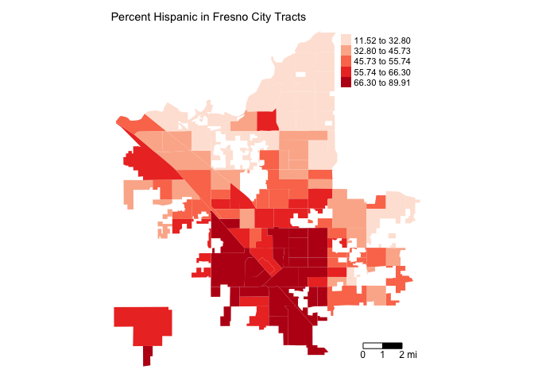
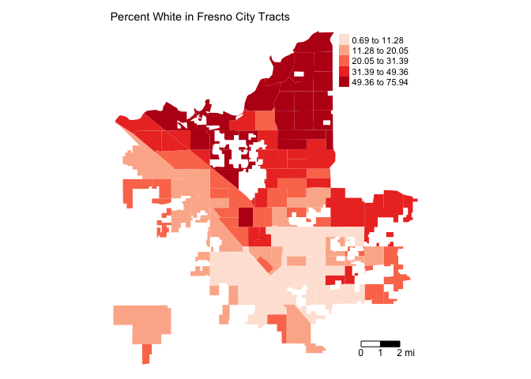

Lab 7a: Segregation
CRD 150 - Quantitative Methods in Community Research
Professor Noli Brazil
May 9, 2022
Measures of segregation and other indices of place-based inequality have been fundamental to documenting and understanding the causes and consequences of residential patterns of racial separation. In this guide you will learn how to calculate neighborhood segregation and using R. The objectives of the guide are as follows
- Calculate the Dissimilarity index, a measure of residential evenness.
- Calculate the Interaction index, a measure of residential exposure.
To accomplish these objectives, you will be working with Census tract data for four of the largest cities in California: Fresno, San Diego, San Jose, and San Francisco.
This lab guide follows closely and supplements the material presented in class Handout 7. Assignment 7 will be posted at the end of Lab 7b, which will be released Wednesday.
Open up a R Markdown file
Download the Lab template into an appropriate folder on your hard drive (preferably, a folder named ‘Lab 7a’), open it in R Studio, and type and run your code there. The template is also located on Canvas under Files. The template is also located on Canvas under Files. Change the title (“Lab 7a”) and insert your name and date. Don’t change anything else inside the YAML (the stuff at the top in between the ---). Also keep the grey chunk after the YAML. For a rundown on the use of R Markdown, see the assignment guidelines.
Installing and loading packages
We will not be using any new packages in this lab. You’ll need to load the following packages. Unlike installing, you will always need to load packages whenever you start a new R session. As such, you’ll always need to use library() in your R Markdown file.
library(sf)
library(tidyverse)
library(tidycensus)
library(tigris)
library(tmap)
library(rmapshaper)
library(knitr)Read in the data
The following code uses the Census API to bring in demographic and socioeconomic tract-level data for four of the most populated cities in California: San Diego, San Jose, San Francisco, and Fresno. We won’t go through each line of code in detail because we’ve covered all of these operations and functions in prior labs. We’ve embedded comments within the code that briefly explains what each chunk is doing. Go back to prior guides (or RDS/GWR) if you need further help.
# Bring in 2015-2019 census tract data using the Census API
ca.tracts19 <- get_acs(geography = "tract",
year = 2019,
variables = c(tpop = "B03002_001",
nhwhite = "B03002_003", nhblk = "B03002_004",
nhasn = "B03002_006", hisp = "B03002_012"),
state = "CA",
survey = "acs5",
output = "wide",
geometry = TRUE)
# Make the data tidy, calculate and keep essential vars.
ca.tracts19 <- ca.tracts19 %>%
rename_with(~ sub("E$", "", .x), everything()) %>%
mutate(pnhwhite19 = 100*(nhwhite/tpop), pnhasn19 = 100*(nhasn/tpop),
pnhblk19 = 100*(nhblk/tpop), phisp19 = 100*(hisp/tpop)) %>%
select(c(GEOID,tpop, pnhwhite19, pnhasn19, pnhblk19, phisp19,
nhwhite, nhasn, nhblk, hisp))
# Bring in city boundaries
pl <- places(state = "CA", year = 2019, cb = TRUE)
# Keep four large cities in CA
large.cities <- filter(pl, NAME == "San Diego" |
NAME == "San Jose" | NAME == "San Francisco" |
NAME == "Fresno")
#Keep tracts in large cities
large.tracts <- ms_clip(target = ca.tracts19, clip = large.cities, remove_slivers = TRUE)## Rows: 840
## Columns: 11
## $ GEOID <chr> "06075020900", "06075021000", "06085512042", "06085503306",…
## $ tpop <dbl> 4597, 4523, 3020, 4373, 5271, 3726, 3344, 2659, 4750, 3046,…
## $ pnhwhite19 <dbl> 42.136176, 59.142162, 9.105960, 2.721244, 53.101878, 61.782…
## $ pnhasn19 <dbl> 13.182510, 11.983197, 40.596027, 35.307569, 36.084235, 2.44…
## $ pnhblk19 <dbl> 2.4146182, 2.0561574, 4.1059603, 1.1433798, 0.2466325, 1.28…
## $ phisp19 <dbl> 39.090711, 19.102366, 37.549669, 59.547222, 5.919180, 31.96…
## $ nhwhite <dbl> 1937, 2675, 275, 119, 2799, 2302, 2220, 2211, 911, 413, 204…
## $ nhasn <dbl> 606, 542, 1226, 1544, 1902, 91, 124, 48, 130, 498, 2851, 22…
## $ nhblk <dbl> 111, 93, 124, 50, 13, 48, 108, 15, 637, 188, 637, 251, 636,…
## $ hisp <dbl> 1797, 864, 1134, 2604, 312, 1191, 780, 328, 3035, 1894, 241…
## $ geometry <MULTIPOLYGON [°]> MULTIPOLYGON (((-122.421 37..., MULTIPOLYGON (…The object large.tracts contains the census tracts located in the four cities. When you view the dataset, you’ll notice that we don’t have any variable indicating which city each tract belongs to. We need the city identifier to calculate segregation for each city. Let’s append the city GEOID and NAME from the object large.cities to each tract in the object large.tracts. We do this by using the st_join() function, which is a part of the sf package. The function will join the variables from large.cities to large.tracts based on geographic location. That is, if a tract is located within a city, that city’s values from large.cities will be appended to that tract.
First, look at the variables already in large.tracts.
names(large.tracts)## [1] "GEOID" "tpop" "pnhwhite19" "pnhasn19" "pnhblk19"
## [6] "phisp19" "nhwhite" "nhasn" "nhblk" "hisp"
## [11] "geometry"Then st_join()
large.tracts <- large.tracts %>%
st_join(large.cities)This function joins the variables from large.cities to the data frame large.tracts, including the variables GEOID.y and NAME, which represent the city GEOID and name.
names(large.tracts)## [1] "GEOID.x" "tpop" "pnhwhite19" "pnhasn19" "pnhblk19"
## [6] "phisp19" "nhwhite" "nhasn" "nhblk" "hisp"
## [11] "STATEFP" "PLACEFP" "PLACENS" "AFFGEOID" "GEOID.y"
## [16] "NAME" "LSAD" "ALAND" "AWATER" "geometry"We don’t need all of these new variables, so let’s use select() to remove the variables we don’t need.
large.tracts <- large.tracts %>%
select(-(STATEFP:AFFGEOID), -(LSAD:AWATER))Mapping
Before calculating segregation, you should map neighborhood racial/ethnic composition in order to gain a visual understanding of how race/ethnic groups are spatially distributed in your study region. For example, let’s map percent Hispanic in Fresno.
large.tracts %>%
filter(NAME == "Fresno") %>%
tm_shape(unit = "mi") +
tm_polygons(col = "phisp19", style = "quantile",palette = "Reds",
border.alpha = 0, title = "") +
tm_scale_bar(breaks = c(0, 1, 2), text.size = 0.75, position = c("right", "bottom")) + tm_layout(main.title = "Percent Hispanic in Fresno City Tracts", main.title.size = 0.9, frame = FALSE)
How does this spatial distribution compare to percent non-Hispanic white?
large.tracts %>%
filter(NAME == "Fresno") %>%
tm_shape(unit = "mi") +
tm_polygons(col = "pnhwhite19", style = "quantile",palette = "Reds",
border.alpha = 0, title = "") +
tm_scale_bar(breaks = c(0, 1, 2), text.size = 0.75, position = c("right", "bottom")) + tm_layout(main.title = "Percent White in Fresno City Tracts", main.title.size = 0.9,
frame = FALSE)
It looks like a North/South divide. Map the other two race/ethnic groups in Fresno and all the groups in the other three cities.
Dissimilarity Index
The most common measure of residential evenness is the Dissimilarity Index D. To calculate D, we’ll follow the Dissimilarity index formula on page 3 of Handout 7. We will calculate Black/White, Hispanic/White, and Asian/White Dissimilarity. We first need to calculate the total population by race/ethnicity for each city. This is the value \(T_m\) and \(T_k\) in the formula. We do this by using the group_by() and mutate() functions.
large.tracts <- large.tracts %>%
group_by(NAME) %>%
mutate(nhwhitec = sum(nhwhite), nhasnc = sum(nhasn),
nhblkc = sum(nhblk), hispc = sum(hisp),
tpopc = sum(tpop)) %>%
ungroup()We already covered group_by() in Lab 4, but as a reminder, the group_by() function tells R that all future functions on large.tracts will be grouped according to the variable NAME, which is the city name. We use the sum() function within the mutate() function to sum up, for example, the non-Hispanic white population nhwhite for each city. We name this variable nhwhitec. If you type in View(large.tracts), you should find that the variable nhwhitec provides the same value for all tracts within the same city. We do this for all the other race/ethnic groups.
The function ungroup() at the end of the code tells R to stop the grouping. For example, we see the results after grouping by NAME
large.tracts %>%
group_by(NAME)## Simple feature collection with 840 features and 17 fields
## Geometry type: MULTIPOLYGON
## Dimension: XY
## Bounding box: xmin: -123.0139 ymin: 32.53471 xmax: -116.9057 ymax: 37.86334
## Geodetic CRS: NAD83
## # A tibble: 840 × 18
## # Groups: NAME [4]
## GEOID.x tpop pnhwhite19 pnhasn19 pnhblk19 phisp19 nhwhite nhasn nhblk hisp
## <chr> <dbl> <dbl> <dbl> <dbl> <dbl> <dbl> <dbl> <dbl> <dbl>
## 1 0607502… 4597 42.1 13.2 2.41 39.1 1937 606 111 1797
## 2 0607502… 4523 59.1 12.0 2.06 19.1 2675 542 93 864
## 3 0608551… 3020 9.11 40.6 4.11 37.5 275 1226 124 1134
## 4 0608550… 4373 2.72 35.3 1.14 59.5 119 1544 50 2604
## 5 0607300… 5271 53.1 36.1 0.247 5.92 2799 1902 13 312
## 6 0607300… 3726 61.8 2.44 1.29 32.0 2302 91 48 1191
## 7 0607300… 3344 66.4 3.71 3.23 23.3 2220 124 108 780
## 8 0607300… 2659 83.2 1.81 0.564 12.3 2211 48 15 328
## 9 0601900… 4750 19.2 2.74 13.4 63.9 911 130 637 3035
## 10 0601900… 3046 13.6 16.3 6.17 62.2 413 498 188 1894
## # … with 830 more rows, and 8 more variables: GEOID.y <chr>, NAME <chr>,
## # geometry <MULTIPOLYGON [°]>, nhwhitec <dbl>, nhasnc <dbl>, nhblkc <dbl>,
## # hispc <dbl>, tpopc <dbl>that the tibble large.tracts is grouped (Groups: NAME [4]). Use ungroup() to, well, ungroup the tibble.
large.tracts %>%
group_by(NAME) %>%
ungroup()## Simple feature collection with 840 features and 17 fields
## Geometry type: MULTIPOLYGON
## Dimension: XY
## Bounding box: xmin: -123.0139 ymin: 32.53471 xmax: -116.9057 ymax: 37.86334
## Geodetic CRS: NAD83
## # A tibble: 840 × 18
## GEOID.x tpop pnhwhite19 pnhasn19 pnhblk19 phisp19 nhwhite nhasn nhblk hisp
## <chr> <dbl> <dbl> <dbl> <dbl> <dbl> <dbl> <dbl> <dbl> <dbl>
## 1 0607502… 4597 42.1 13.2 2.41 39.1 1937 606 111 1797
## 2 0607502… 4523 59.1 12.0 2.06 19.1 2675 542 93 864
## 3 0608551… 3020 9.11 40.6 4.11 37.5 275 1226 124 1134
## 4 0608550… 4373 2.72 35.3 1.14 59.5 119 1544 50 2604
## 5 0607300… 5271 53.1 36.1 0.247 5.92 2799 1902 13 312
## 6 0607300… 3726 61.8 2.44 1.29 32.0 2302 91 48 1191
## 7 0607300… 3344 66.4 3.71 3.23 23.3 2220 124 108 780
## 8 0607300… 2659 83.2 1.81 0.564 12.3 2211 48 15 328
## 9 0601900… 4750 19.2 2.74 13.4 63.9 911 130 637 3035
## 10 0601900… 3046 13.6 16.3 6.17 62.2 413 498 188 1894
## # … with 830 more rows, and 8 more variables: GEOID.y <chr>, NAME <chr>,
## # geometry <MULTIPOLYGON [°]>, nhwhitec <dbl>, nhasnc <dbl>, nhblkc <dbl>,
## # hispc <dbl>, tpopc <dbl>and the grouping is gone! It’s always good practice to ungroup() a data set if you are saving it for future use (rather than using it as a summary table as we’ve doing so far in the class).
We’ve got the values for \(T_m\), \(T_k\), \(t_{im}\), and \(t_{ik}\), so we can calculate the rest of the formula, breaking it down piece-by-piece like we did in the handout and in lecture. The following code calculates the Dissimilarity indices.
large.tracts %>%
group_by(NAME) %>%
mutate(d.wb = abs(nhblk/nhblkc-nhwhite/nhwhitec),
d.wa = abs(nhasn/nhasnc-nhwhite/nhwhitec),
d.wh = abs(hisp/hispc-nhwhite/nhwhitec)) %>%
summarize(BWD = 0.5*sum(d.wb, na.rm=TRUE), AWD = 0.5*sum(d.wa, na.rm=TRUE),
HWD = 0.5*sum(d.wh, na.rm=TRUE)) %>%
ungroup()## Simple feature collection with 4 features and 4 fields
## Geometry type: MULTIPOLYGON
## Dimension: XY
## Bounding box: xmin: -123.0139 ymin: 32.53471 xmax: -116.9057 ymax: 37.86334
## Geodetic CRS: NAD83
## # A tibble: 4 × 5
## NAME BWD AWD HWD geometry
## <chr> <dbl> <dbl> <dbl> <MULTIPOLYGON [°]>
## 1 Fresno 0.466 0.389 0.406 (((-119.6798 36.7574, -119.6731 36.75744, -11…
## 2 San Diego 0.557 0.469 0.536 (((-117.2526 32.75295, -117.253 32.75186, -11…
## 3 San Francisco 0.526 0.399 0.431 (((-123.0128 37.6965, -123.0075 37.69593, -12…
## 4 San Jose 0.420 0.479 0.487 (((-121.7575 37.39844, -121.7585 37.3954, -12…Let’s break the code down so we’re all on the same page. We use mutate() to calculate the tract level contributions to the index, i.e. the value \(\left|\frac{t_{rm}}{T_m} - \frac{t_{rk}}{T_k}\right|\) for each neighborhood \(i\). Next, we turn to summarize() to finish the rest of the job. Within summarize(), we use the function sum() to add the neighborhood specific values in Equation 1 in Handout 7. In other words, sum() is performing the \(\sum\limits_{i}^{N}\) that adds up \(\left|\frac{t_{rm}}{T_m} - \frac{t_{rk}}{T_k}\right|\). Finally, multiply the summed up value by 0.5 to get the final indices.
The resulting values provide the Dissimilarity indices for Black/White (BWD), Asian/White (AWD), and Hispanic/White (HWD). In all of these cases, we calculate segregation from white residents, but you can calculate segregation for any race/ethnicity combination (e.g. Black/Hispanic). Instead of just copying and pasting the chunk of code above into your console, make sure you understand what each line of code is doing. Not only will it help you become a more seasoned R coder, but it will also help you better understand the underlying math behind the Dissimilarity index.
The results table we got above is a little messy. Let’s clean it up by doing two things: (1) Drop the geometry column using st_drop_geometry(), which is a part of the sf package, and (2) use the kable() function, which is a part of the knitr package, to make a nicely formatted table. The st_drop_geometry() function removes the geometry variable, and thus makes the object large.tracts no longer spatial. We add these functions to the bottom of the code we ran directly above.
large.tracts %>%
group_by(NAME) %>%
mutate(d.wb = abs(nhblk/nhblkc-nhwhite/nhwhitec),
d.wa = abs(nhasn/nhasnc-nhwhite/nhwhitec),
d.wh = abs(hisp/hispc-nhwhite/nhwhitec)) %>%
summarize(BWD = 0.5*sum(d.wb, na.rm=TRUE), AWD = 0.5*sum(d.wa, na.rm=TRUE),
HWD = 0.5*sum(d.wh, na.rm=TRUE)) %>%
ungroup() %>%
st_drop_geometry() %>%
kable(digits = 3)| NAME | BWD | AWD | HWD |
|---|---|---|---|
| Fresno | 0.466 | 0.389 | 0.406 |
| San Diego | 0.557 | 0.469 | 0.536 |
| San Francisco | 0.526 | 0.399 | 0.431 |
| San Jose | 0.420 | 0.479 | 0.487 |
Looks much better. The argument digits = 3 within kable() rounds up values to three significant digits after the decimal.
The Dissimilarity index for Black/White in Fresno is 0.466. The interpretation of this value is that 46.6% of black residents would need to move neighborhoods in order to achieve a uniform distribution of black and white residents across neighborhoods in the city.
Interaction Index
The most common measure of exposure is the Interaction Index \(P^*\). Let’s calculate the exposure of black (BWI), Asian (AWI), Hispanic (HWI) residents to white residents using the formula on page 6 of Handout 7. We present the results in a nice table using the function kable().
large.tracts %>%
group_by(NAME) %>%
mutate(i.wb = (nhblk/nhblkc)*(nhwhite/tpop),
i.wa = (nhasn/nhasnc)*(nhwhite/tpop),
i.wh = (hisp/hispc)*(nhwhite/tpop)) %>%
summarize(BWI = sum(i.wb, na.rm=TRUE), AWI = sum(i.wa, na.rm=TRUE),
HWI = sum(i.wh, na.rm=TRUE)) %>%
ungroup() %>%
st_drop_geometry() %>%
kable(digits = 3)| NAME | BWI | AWI | HWI |
|---|---|---|---|
| Fresno | 0.226 | 0.265 | 0.223 |
| San Diego | 0.302 | 0.381 | 0.279 |
| San Francisco | 0.298 | 0.326 | 0.338 |
| San Jose | 0.284 | 0.219 | 0.208 |
The mutate() function is creating the tract specific values \(\frac{t_{im}}{T_m} * \frac{t_{ik}}{t_i}\). We then turn to summarize() to perform the \(\sum\limits_{i}^{N}\).
The probability of a Black resident “interacting” with a white person in his or her neighborhood is about 22.6% in Fresno. We can also interpret this to mean that 23 of every 100 people a Black person meets in his or her neighborhood will be white. Remember that interaction is not symmetric. Calculate the interaction of white residents with Black residents in the other cities and see if there are major differences with the values we calculated above.

This work is licensed under a Creative Commons Attribution-NonCommercial 4.0 International License.
Website created and maintained by Noli Brazil